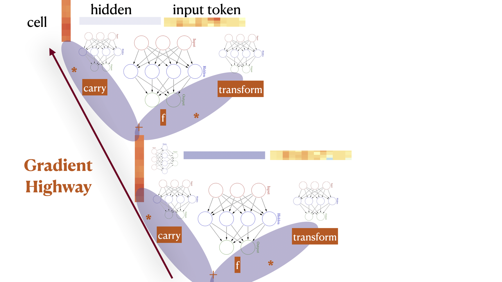

This is a collection of equations for neural circuits.
Feed Forward
$ h_t = F(x_t) $
A feed forward with one hidden layer and a nonlinearity is already a universal approximator, when \(F(x)_i = \sigma(\langle w_i, x \rangle) = \sigma(\sum_j w_{ij} x_j)\). Here \(w_i\) is an i-th row vector of some parameter matrix \(W\), and \(\sigma\) is some nonlinearity function.
Searching for approximations of this form for most functions requires a lot of time. The efficiency of the search depends on the choice of \(\sigma\), the size and initialization (choice of family) of \(W\). In practice we would like to add an inductive bias to the computation to reflect the structure of the data.
Also, dropping nonlinearities \(\sigma\) is useful for algebra purposes, as linear operations tend to distribute over each other, which allows for efficient design of computations. Nonlinearity can be recovered through other means like autoregression. I’m going to mostly ignore nonlinearities.
Making future timesteps dependent on the past gives a recurrent:
Recurrent
\(h_t = F(x_t) + H(h_{t-1})\)
The nonlinearity is usually applied after \(+\). A recurrent network can be seen as a shared weights deep feed forward network where future inputs are added during later layers.
Deep networks suffer from gradient vanishing or explosion during training. A way to mitigate gradient issues is to replace applications of the chain rule of gradients with the sum rule, like is done in the highway below.
Highway
\(h_t = C(x_t) \cdot x_t + T(x_t) \cdot F(x_t)\)
where \(C\) reads carry gate and \(T\) reads transform gate. Circuits in gate position usually use the \(\sigma\) nonlinearity with range 0-1. These gates explicitly control what information is taken from what “branch” of the computation.
Using a highway with identity gates gives the residual:
Residual
\(h_t = x_t + F(x_t)\)
The residual highlights the importance of \(+\), as gradient \(\nabla\) is a linear operator that distributes over \(+\). \(h\) can be thought of a residual stream, with which each layer \(t\) communicates by reading and writing.
Combining a highway with recurrence gives an LSTM. Notably, highways were likely derived by removing recurrence from LSTM however thinking in reverse makes it easier for me personally.
Long Short Term Memory
\(c_t = C(x_t,h_{t-1}) \cdot c_{t-1} + T(x_t,h_{t_1}) \cdot F(x_t,h_{t-1})\)
\(h_t = O(x_t,h_{t-1}) \cdot c_{t}\)
where \(C\) is also named forget gate, \(T\) is input gate, and \(O\) is output gate. In this context the gates are recurrent.
Using feed forward gates without recurrence makes a quasi LSTM. Quasi LSTM is designed so that equations for future hidden states can be precomputed up front for parallelization.
